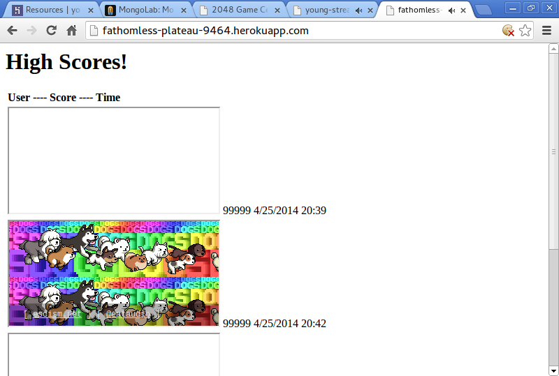
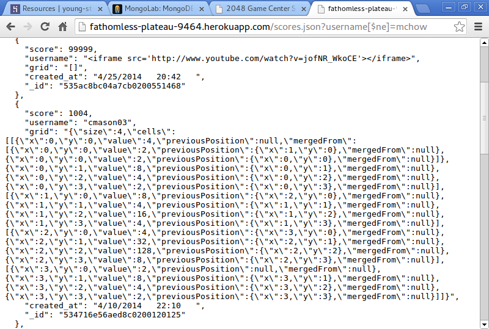
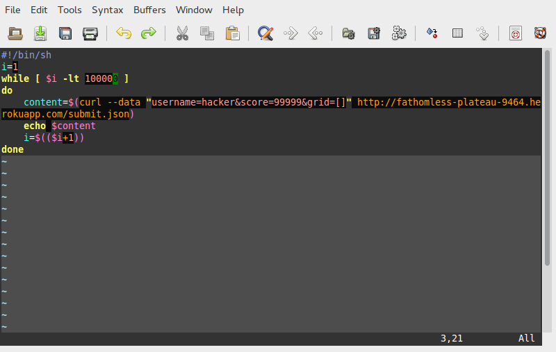
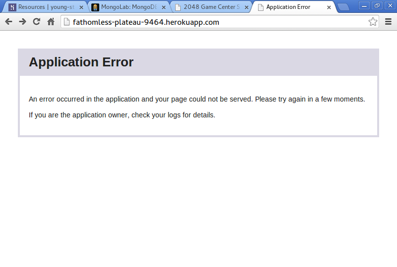

Chia-Chi (Victor) Chao
2048 Game Center is a server-side web application developed by Corey Mason, with the goal of maintaining final scores and grids of 2048 players for an indefinite period of time. Within the web application are three APIs--one allows its users to submit their final scores and grids, the other allows them to retrieve those data, and the last one allows them to visualize scores submitted by all players.
The objective of this assessment report is to pinpoint where the security issues and potential security issues of the web application are, and further provide suggestions on how to solve those issues.
Black-box testing was performed to assess the security of the application. The major technique used was "curl", applying directly on the Heroku URI--fathomless-plateau-9464.herokuapp.com. Using the technique in various ways, three security issues were discovered and documented in this report.
The security issues discovered and addressed in this assessment report can all be attributed to one major flaw in the development process of the web application--trusting the users too much. The application assumes the good intentions of the users as well as the correctness of their inputs while submitting scores and grids, without actively validating them. This could be dangerous as it leaves a window open for people with intentions to perform attacks by submitting malicious inputs which could potentially break the application.
The issue was found in the application's submit.json API. It has a high severity because any user or developer with access to the web application and possibly its source code can submit malicious data using the POST API.
Through the use of a simple tool such as curl, the users are able to submit HTML and/or JavaScript as username, score, or grid. Because the input fields are not validated, the HTML and/or JavaScript are injected directly into the MongoDB database. Once the scores.json or the root GET API is executed, the code within the data fields will also be executed, creating unwanted side effects on the site.
By executing the commands curl --data "username=<iframe='http://www.youtube.com/watch?v=jofNR_WkoCE'> </iframe>&score=99999&grid=[]" http://fathomless-plateau-9464.herokuapp.com/submit.json, and curl --data "username=<iframe src='http://omfgdogs.com'> </iframe>&score=99999&grid=[]" http://fathomless-plateau-9464.herokuapp.com/submit.json, the iframes are injected into the web application like the following:

This issue can be resolved by validating inputs, such as replacing "<" and ">" with "<" and ">", respectively.
The issue was found in the the web application's scores.json API. It has a high severity because any user with access to the application can access the entire MongoDB database using query on the GET API.
By adding the keyword [$ne], which stands for "not equal" in the query, the users can obtain all data in the database except for the ones they query for on the GET API. In the context of this application, if the query http://fathomless-plateau-9464.herokuapp.com/scores.json ?username[$ne]=mchow is made, all the scores and grids whose username field is not "mchow" will show up in JSON, like the following:

This issue can be resolved by sanitizing query inputs to ensure there are no special characters.
The issue was discovered in the application's submit.json API. It has a medium severity because even though any user or developer with access to the application and possibly its source code can break it by repeatedly submitting data using the POST API, it can be quickly restored by simply sanitizing the database.
Because MongoLab limits the database quota to 496 MB for an unpaid user, if curl, the tool brought up in the first security issue, is used repeatedly to submit data to the database using the POST API, and the total size of data exceeds the quota, the result will be an application error, or a denial of service.
By running the following bash script:

the curl commands broke the web application by posting huge amounts of data:
The issue can be resolved, again, by validating user inputs.
The security issues addressed in the assessment can be solved by implementing series of validations and verification for the GET and the POST APIs, which would cost approximately $1000.